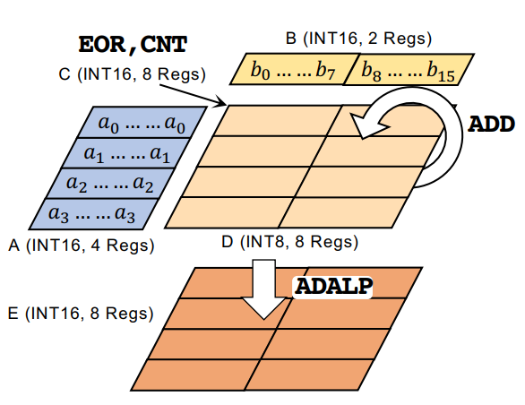

|  |
BiFSMN: Binary Neural Network for Keyword Spotting
[PDF]
Haotong Qin, Xudong Ma, Yifu Ding, Xiaoyang Li, Yang Zhang, Yao Tian, Zejun Ma, Jie Luo, Xianglong Liu
International Joint Conference on Artificial Intelligence (IJCAI), 2022
arXiv /
News:
(机器之心,
PaperWeekly)
In this paper, we present BiFSMN, an accurate and extreme-efficient binary network for KWS,
outperforming existing methods on various KWS datasets and achieving impressive 22.3x speedup and 15.5x storage-saving on edge hardware.
|